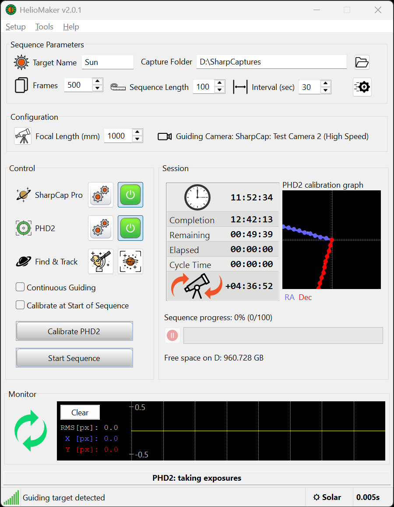
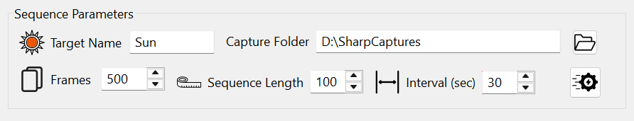
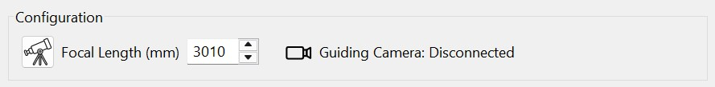
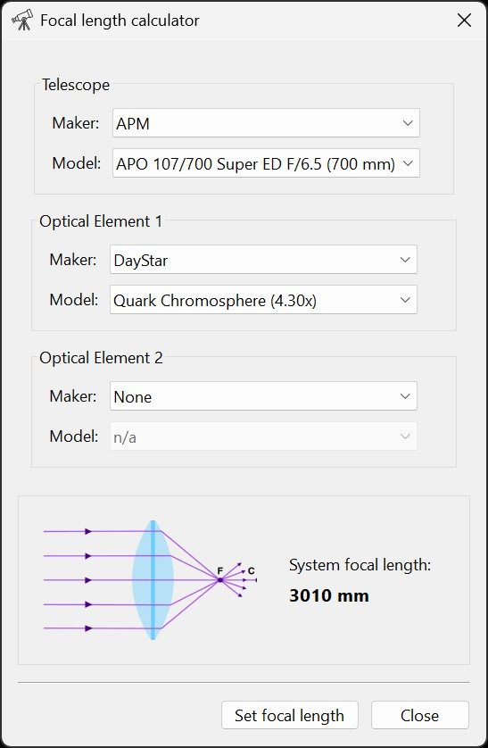
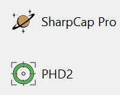
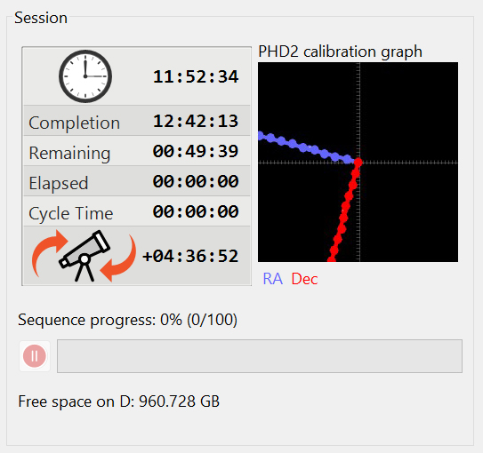
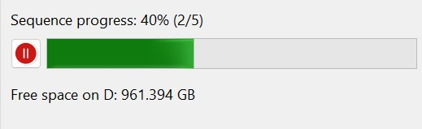
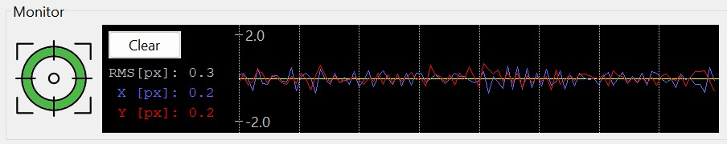
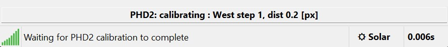

Main Screen
The main screen of HelioMaker provides an intuitive interface for configuring and controlling the guiding and imaging setup. This section explains each area of the main screen in detail.

Sequence Parameters
The sequence parameters include fields for defining the imaging sequence, such as:

- Target Name: The name of the object being imaged (e.g., "Sun").
- Capture Folder: The directory where the captured images will be stored.
- Frames / Time Limit: Depending on the Sequence Options configuration, each capture cycle may be defined either by the number of frames or by a burst duration in seconds.
- Sequence Length: Number of capture cycles in sequence.
- Interval: The time interval, in seconds, from the start of one capture cycle to the start of the next. Ensure the interval is long enough for SharpCap to complete the capture and, when continuous guiding is disabled, for PHD2 to maintain effective guiding within the remaining time. A red background indicates the Interval is too short.
- Sequence Options: Additional options for the sequence, including optional refocusing automation, cloud detection and pause handling. See Sequence Options.
Focal Length
The Focal Length field must be set according to the currently selected optical gear. It is important to set this field correctly as this value contributes to the accuracy of PHD2 calibration, which is essential for guiding accuracy, as well as for estimating correct settings for SHG scanning that require accurate image scale.

- When using a shared camera (Virtual Planetary Camera in PHD2), the focal length should be set to the effective focal length of the primary imaging system. This includes the main imaging telescope focal length multiplied by any additional optical elements, such as focal reducers or Barlows. The Focal Length calculator tool can be opened by clicking the telescope button next to the Focal Length field, which helps compute the effective focal length based on your optical setup.
-
For example, if you are using a solar telescope with a focal length of 700mm and a DayStar Quark Hydrogen filter with a magnification factor of 4.3, the effective focal
length becomes
700 x 4.3 = 3010mm. Enter this value in the Focal Length field, or use Focal Length calculator tool to configure your setup and automatically populate the field. - When using a physical camera connected to PHD2, use the effective focal length of the guidescope connected to that camera. In Full Disk/Crescent mode, Find & Track also provides a focal-length assistant that measures the Sun or Moon over several live frames and can apply the result directly to PHD2. Re-run PHD2 calibration after changing this value.
- Guiding Camera: Displays the currently selected guiding camera, serving as a reference for setting the correct focal length based on the telescope and any accessories used with that camera.

Control Section
The Control section provides tools for configuring and managing HelioMaker's integration with SharpCap Pro and PHD2. It includes gear icons and link buttons-described in detail in the Config and Setup section-as well as checkboxes for enabling additional features, which are explained below:
- SharpCap Pro and PHD2 static labels: can be double-clicked to bring the respective application to the foreground.
- Gear Buttons: Open the configuration dialogs for SharpCap Pro and PHD2.
- Link Buttons: Red when not connected and green when successfully connected.
- Find & Track icon and button: Opens the Find & Track tool, where you can select the detection mode and fine-tune detection parameters for the current target before starting PHD2 calibration or guiding. This tool is essential for configuring the detection and tracking features provided by HelioMaker. The icon displayed to the right of this button shows the currently selected detection mode. The tool is available only when HelioMaker is connected to PHD2, and to SharpCap Pro if a shared camera is in use.
- Continuous Guiding: Keeps guiding active throughout the imaging sequence. When enabled, PHD2 will guide continuously, even during video or image capture by SharpCap Pro. When disabled, guiding and image capture alternate, with PHD2 pausing during SharpCap's capture bursts. Disabling this option may help reduce image instability caused by guiding pulses, especially when polar alignment is not precise.
- Calibrate at Start of Sequence: Ensures a PHD2 calibration is performed at the beginning of the sequence. Calibration is essential before guiding can begin, particularly after any physical changes to the setup, such as adjustments to the camera's rotation angle, binning settings, or mount alignment in the Alt-Az axes. Enable this checkbox to automate calibration at the start of the sequence, or use the Calibrate PHD2 button to initiate it manually.
- Calibrate PHD2 button: Starts a PHD2 calibration with optimal parameters calculated by HelioMaker.
- Start Sequence Button: Begins an automated, guided image capture sequence using the parameters configured in HelioMaker. If the "Calibrate at Start of Sequence" checkbox is selected, a PHD2 calibration will be performed before starting the sequence. When the delayed-start option is enabled in Sequence Options, this control changes into a menu-style button that lets you either start immediately or arm the sequence for a specified time.

Notes about Continuous Guiding
When Continuous Guiding is disabled, it can be advantageous in certain scenarios:
- If image drift is minimal and the Interval between recording cycles is long enough for PHD2 to restore the original target position before the next cycle.
- If the mount's guiding corrections introduce more jitter or instability than the natural, gradual drift of the target. By pausing guiding during exposures, you reduce the unwanted motion caused by frequent corrections, potentially resulting in sharper and more stable images.
On the other hand, enabling Continuous Guiding can be beneficial in situations where:
- The Interval between cycles is short, leaving limited time for PHD2 to reacquire and center the target.
- Polar alignment is not optimal, necessitating frequent corrections to maintain a stable target position.
Static Labels and Icons in the Control Section
A very useful but easy-to-miss feature of HelioMaker is the functionality associated with the static labels and icons representing SharpCap Pro and PHD2 in the Control section of the main screen.

Feature Overview:
- Double-click on the SharpCap Pro or PHD2 labels, or their respective iconic symbols, to locate and restore the application windows.
- If the referenced application is already running but is minimized (iconized) or hidden beneath other windows, this action will bring it to the foreground as the topmost window.
- Note: This feature will not launch SharpCap Pro or PHD2 if they are not already running. It is intended to assist when the applications are connected to HelioMaker but not visible.
This convenient functionality ensures quick access to the connected applications without the need to search for them manually.
Session Area
This area displays information about the imaging session, including:
- Current Time: The first row, marked with a clock icon, displays the current system time.
- Completion: The estimated time of sequence completion. Slow disk write speeds may reduce the accuracy of this estimate.
- Remaining: The estimated remaining time before sequence completion. Slow disk write speeds may reduce the accuracy of this estimate.
- Elapsed: The time that has passed since the sequence started.
- Rec. Time: Displays the measured duration of the last completed recording cycle. This value helps in evaluating whether interval timing and the number of frames per cycle are well adjusted. If Continuous Guiding is disabled, ensure that the recorded duration is short enough to allow PHD2 to complete any necessary guiding corrections before the next recording cycle begins.
-
Meridian Flip Timer: The last row, marked with a telescope icon, shows the estimated time before or after the meridian flip. Negative values indicate time remaining before the flip, while positive values show time elapsed after the flip. The value turns red when the current time is near the meridian flip.
PHD2 must be connected to HelioMaker, and the mount must be in a tracking state for the timer to function. While HelioMaker cannot control the meridian flip, this status display helps users monitor the session and take appropriate actions if a flip occurs during recording.
Please note that the actual timing of the meridian flip depends on the mount hardware and its controller settings. This timer serves as a rough indicator and should not be solely relied upon for precise flip timing.

The session section also includes:
- A PHD2 calibration graph, useful for assessing polar alignment and calibration quality. When polar alignment is nearly perfect, the RA and Dec axes should be orthogonal to each other, with minimal orthogonality error (shown when the mouse pointer hovers over the graph). While it is ideal for the calibration graph to display at least 12 well-spaced thick dots along each axis, HelioMaker can still perform reasonably well with less-than-perfect PHD2 calibration or slight polar misalignment. However, poor polar alignment or invalid PHD2 calibration may ultimately result in the target drifting out of frame. If you are experiencing issues with PHD2 calibration or HelioMaker fails to keep your target in frame for the desired duration, the first step is to check and adjust detection in HelioMaker's Find & Track tool. Use PHD2's local detector settings only in standalone or fallback physical-camera operation. If your view is obscured by clouds or other visual obstacles, detection may become unreliable. If detection is stable and consistent but the target still drifts, please refer to the PHD2 user manual, user forums, or other resources for advice on improving your mount's polar alignment and guiding performance.
- A sequence progress indicator and session pause/resume button when a sequence initiated from HelioMaker is active. The progress indicator shows the number of completed cycles out of the total number of cycles in the sequence. The pause/resume button allows you to temporarily halt the sequence and resume it later without losing progress.


Monitor Section
The Monitor section displays real-time PHD2 guiding graph and metrics, such as:
- Guiding graph: A real-time visual representation of guiding performance, displaying error measurements along the X (RA) and Y (Dec) axes to assist in monitoring and optimizing tracking accuracy. The graph automatically adjusts its scale based on the data range.
- Clear button: Clears the local guiding graph and resets guiding statistics.
- RMS (Total): The root mean square (RMS) of guiding errors on both axes, expressed in guiding camera pixel units.
- X and Y: The guiding errors in X and Y axes, expressed in guiding camera pixel units.

On the left side of the Monitor area, you will find the HelioMaker Indicator - a large graphical element that represents the current state of PHD2 (e.g., stopped, looping exposures, guiding, calibration) as well as HelioMaker-specific states (e.g., SharpCap capturing frames or guiding simultaneously).
The PHD2 guiding graph is a useful tool for monitoring guiding performance. When PHD2 successfully prevents your target from drifting, the graph should exhibit guiding error fluctuations around the horizontal X-axis, showing dispersion within a few pixels depending on your equipment and seeing conditions. However, if PHD2 fails to keep your target in the same position, the graph will display divergent behavior with RMS numbers increasing over time.
In the latter case, it is recommended to:
- Check if your target is obstructed by clouds or other obstacles.
- Verify focusing and HelioMaker detection settings, along with PHD2 guiding parameters. Use PHD2's local detector settings only during standalone or fallback operation.
- Verify that the mount is using the correct tracking mode and, when appropriate, that Dynamic Target Tracking is enabled.
- Consider repeating PHD2 calibration (after cancelling any active sequence, if one is in progress).
In addition to the large monitor-state icon, HelioMaker also displays a smaller tracking-rate status indicator in the status area. This indicator can help confirm whether the mount is using a standard built-in rate or a dynamically updated custom tracking rate. For details, refer to the Monitor Area Indicators chapter and the Dynamic Target Tracking chapter.
Regularly reviewing the guiding graph can help identify and troubleshoot potential issues during imaging sessions.
Status lines
- Upper Status Line: Displays the current states and related details for HelioMaker, PHD2, and SharpCap.
- Lower Status Line: Displays signal strength bars to provide visual feedback on the quality of PHD2 planetary detection, state information, the current tracking-rate indicator, any current PHD2 alert messages (refer to the PHD2 documentation for detailed descriptions), and the HelioMaker processing time for the last guiding frame in seconds. The tracking-rate indicator can show standard mount rates or HelioMaker's dynamically updated custom tracking mode.

Refer to the respective sections of this manual for detailed guidance on specific features.